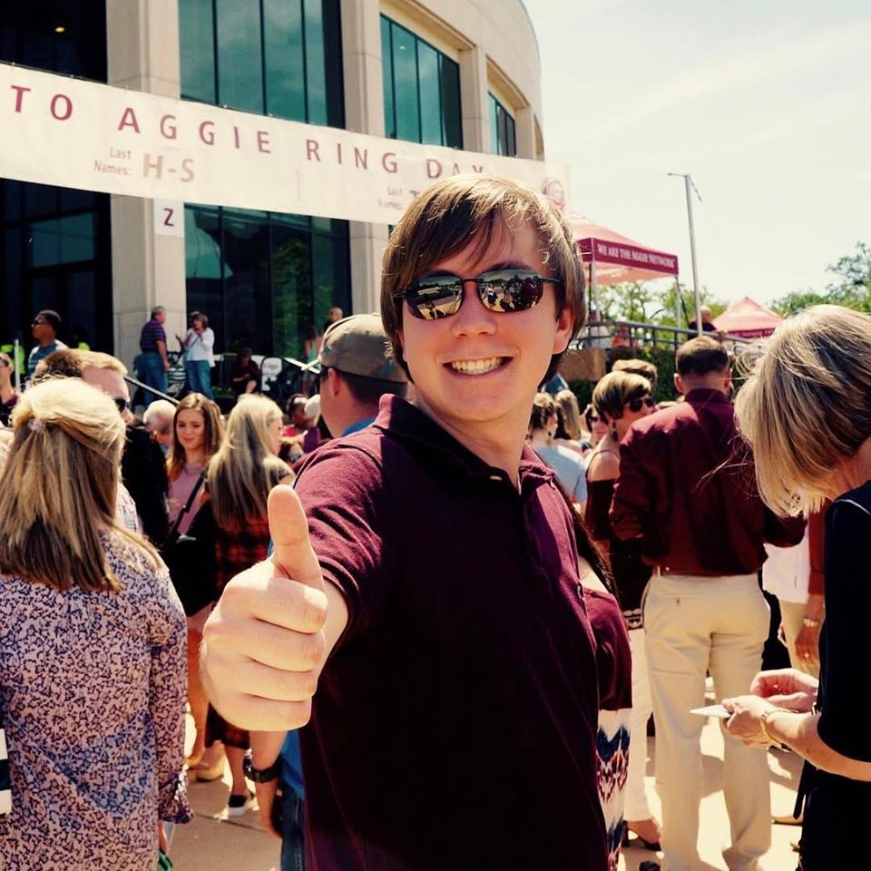

Colin Banigan
About Me

I am a junior undergraduate student at Texas A&M University pursuing a bachelors degree in Computer Science with minors
in both Art and Mathematics. My passion has been computers ever since I was little, and I am currently pursuing a career in software engineering. Throughout
my life, I have been fascinated by creative arts, whether that be art, music, or even design. Great design strikes a chord with me,
and I hope to be able to incorporate solid design choices throughout my professional work.
Name:
Colin Banigan
Age:
20
Location:
College Station, TX
Contact
Send me a note.